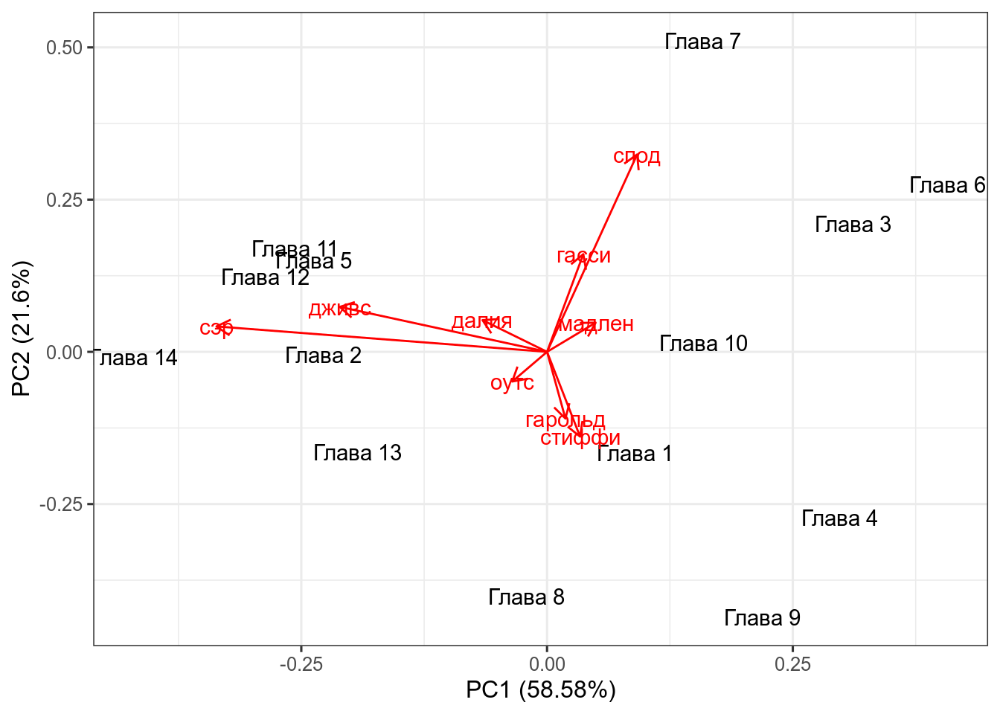

Метод главных компонент (PCA, Principal Component Analysis) применим к числовым данным, в которых строчки — это точки наблюдения, а столбцы — это исследуемые переменные. Данный метод часто приводят и используют как метод уменьшения размерности, однако я разделяю мнение, согласно которому это лишь метод смены перспективы, в результаты которого некоторое количество размерностей становится маловажными.
В данной лекции я буду использовать данные из романа П. Г. Вудхауза “Фамильная честь Вустеров”. В датасете собраны несколько переменных:
\[var(X) = \frac{\sum_{i = 1}^n(x_i - \bar{x})^2}{n - 1}\]
\[cov(X, Y) = \frac{\sum_{i = 1}^n(x_i - \bar{x})(y_i-\bar{y})}{n - 1}\]
## гарольд гасси далия дживс мадлен
## гарольд 1.372875e-06 -1.178804e-06 -6.161597e-07 -1.087033e-06 -5.017748e-07
## гасси -1.178804e-06 3.079694e-06 2.170550e-07 -6.615942e-07 1.114755e-06
## далия -6.161597e-07 2.170550e-07 2.560710e-06 3.618399e-06 -7.615052e-07
## дживс -1.087033e-06 -6.615942e-07 3.618399e-06 1.029295e-05 -2.148603e-06
## мадлен -5.017748e-07 1.114755e-06 -7.615052e-07 -2.148603e-06 1.318322e-06
## оутс 4.177791e-07 -7.493884e-07 1.624905e-07 2.211649e-07 -3.925977e-07
## спод -1.654950e-06 3.370561e-06 -4.945526e-07 -2.215768e-06 1.459139e-06
## стиффи 1.555109e-06 -1.666275e-06 -1.389433e-06 -1.843664e-06 -6.577010e-07
## сэр -1.469249e-06 -1.922950e-06 3.155337e-06 1.193258e-05 -2.612465e-06
## оутс спод стиффи сэр
## гарольд 4.177791e-07 -1.654950e-06 1.555109e-06 -1.469249e-06
## гасси -7.493884e-07 3.370561e-06 -1.666275e-06 -1.922950e-06
## далия 1.624905e-07 -4.945526e-07 -1.389433e-06 3.155337e-06
## дживс 2.211649e-07 -2.215768e-06 -1.843664e-06 1.193258e-05
## мадлен -3.925977e-07 1.459139e-06 -6.577010e-07 -2.612465e-06
## оутс 1.246261e-06 -1.418115e-06 9.103099e-08 2.625355e-06
## спод -1.418115e-06 9.893695e-06 -1.244713e-06 -4.146631e-06
## стиффи 9.103099e-08 -1.244713e-06 3.568675e-06 -1.999536e-06
## сэр 2.625355e-06 -4.146631e-06 -1.999536e-06 2.207589e-05\[cor(X, Y) = \frac{cov(X, Y)}{\sigma_X\times\sigma_Y}\]
## гарольд гасси далия дживс мадлен оутс
## гарольд 1.0000000 -0.57328735 -0.32862278 -0.28917272 -0.3729775 0.31939405
## гасси -0.5732873 1.00000000 0.07729222 -0.11750818 0.5532418 -0.38251524
## далия -0.3286228 0.07729222 1.00000000 0.70480092 -0.4144594 0.09095850
## дживс -0.2891727 -0.11750818 0.70480092 1.00000000 -0.5832781 0.06175072
## мадлен -0.3729775 0.55324184 -0.41445938 -0.58327808 1.0000000 -0.30628984
## оутс 0.3193940 -0.38251524 0.09095850 0.06175072 -0.3062898 1.00000000
## спод -0.4490452 0.61061743 -0.09825464 -0.21957111 0.4040236 -0.40385722
## стиффи 0.7025735 -0.50261963 -0.45962545 -0.30419950 -0.3032245 0.04316496
## сэр -0.2668830 -0.23321428 0.41966860 0.79159912 -0.4842622 0.50052346
## спод стиффи сэр
## гарольд -0.44904519 0.70257349 -0.2668830
## гасси 0.61061743 -0.50261963 -0.2332143
## далия -0.09825464 -0.45962545 0.4196686
## дживс -0.21957111 -0.30419950 0.7915991
## мадлен 0.40402356 -0.30322448 -0.4842622
## оутс -0.40385722 0.04316496 0.5005235
## спод 1.00000000 -0.20947701 -0.2805802
## стиффи -0.20947701 1.00000000 -0.2252769
## сэр -0.28058019 -0.22527691 1.0000000Как вы знаете, матрицы можно перемножать. Подсказка.
m1 <- matrix(c(2, 2, 3, 1), nrow = 2)
m2 <- matrix(c(1, 3), nrow = 2)
m3 <- matrix(c(3, 2), nrow = 2)
m1## [,1] [,2]
## [1,] 2 3
## [2,] 2 1## [,1]
## [1,] 1
## [2,] 3## [,1]
## [1,] 11
## [2,] 5## [,1] [,2]
## [1,] 2 3
## [2,] 2 1## [,1]
## [1,] 3
## [2,] 2## [,1]
## [1,] 12
## [2,] 8В первом примере мы получили матрицу \(\left(\array{11\\ 5}\right)\), а во втором случае \(\left(\array{12\\ 8}\right) = 4 \times \left(\array{3\\ 2}\right)\), т. е. при умножении матрицы мы получили значение, равное скалярному умножению той же самой матрицы.
Мы можем думать об одной матрице, как о векторе \(\left(\array{3\\ 2}\right)\) в двумерном пространстве. Тогда матрица \(\left(\array{2 & 3\\ 2 & 1}\right)\) — это матрица некоторой трансформации А, которая изменяет вектор \(\left(\array{3\\ 2}\right)\). В таком случае собственный вектор (eigenvector) — это тот постоянный объект, который подвергается трансформации, а собственное значение (eigenvalues) — это скалярный мультипликатор собсвтенного вектора (в нашем случае собственное значение равно 4).
Свойства собсвтенных векторов:
Как найти собственный вектор в R:
## eigen() decomposition
## $values
## [1] 4 -1
##
## $vectors
## [,1] [,2]
## [1,] 0.8320503 -0.7071068
## [2,] 0.5547002 0.7071068Собственные значения в переменной values функция всегда возвращает в убывающем порядке, а каждая колонка в переменной eigenvectors соответствует элементу в переменной values. Сравните со значениями, которые мы получили руками:
## [1] 0.8320503## [1] 0.5547002Обычно переменные, которые используют в PCA нужно обязательно нормализовать, но так как мы будем использовать частотность, эти переменные не нуждаются в нормализации. Давайте сравним результат работы функций, которые мы рассмотрели перед этим и функции prcomp.
## eigen() decomposition
## $values
## [1] 3.245800e-05 1.196687e-05 4.517294e-06 3.377992e-06 1.319692e-06
## [6] 9.606964e-07 5.074912e-07 2.534438e-07 4.758608e-08
##
## $vectors
## [,1] [,2] [,3] [,4] [,5] [,6]
## [1,] 0.04446386 0.26045490 -0.07123814 -0.2007927 -0.19032360 -0.21673241
## [2,] 0.08779348 -0.38160590 0.15116503 0.2628203 0.33907652 -0.78159891
## [3,] -0.15615004 -0.12382054 0.44598913 -0.1200921 -0.57733956 -0.25790782
## [4,] -0.50150883 -0.17557608 0.44773479 -0.4588859 0.25194436 0.07393053
## [5,] 0.11753413 -0.11397729 -0.02832850 0.3441355 0.25226081 0.13479280
## [6,] -0.08429973 0.11600713 -0.21296940 0.2130548 -0.52978937 -0.27686794
## [7,] 0.21798564 -0.77103418 -0.39697535 -0.3648273 -0.21338990 0.11194383
## [8,] 0.07986552 0.33105390 -0.36958846 -0.5731985 0.24597480 -0.39980733
## [9,] -0.79975269 -0.09921106 -0.48203526 0.2003306 0.04069356 -0.05427500
## [,7] [,8] [,9]
## [1,] 0.62957491 -0.34447525 0.53532218
## [2,] 0.13186661 0.10619326 0.01443264
## [3,] -0.50008339 -0.12601954 0.28487803
## [4,] 0.25634369 -0.25181765 -0.32947429
## [5,] -0.23614522 -0.84496615 0.04925650
## [6,] 0.18859046 -0.22734885 -0.66640912
## [7,] 0.06916025 -0.06534478 0.01343150
## [8,] -0.40770488 -0.13773815 -0.11544756
## [9,] -0.09007671 0.04324016 0.25194682## Standard deviations (1, .., p=9):
## [1] 0.0056971923 0.0034593165 0.0021253926 0.0018379315 0.0011487786
## [6] 0.0009801512 0.0007123842 0.0005034320 0.0002181423
##
## Rotation (n x k) = (9 x 9):
## PC1 PC2 PC3 PC4 PC5 PC6
## гарольд 0.04446386 -0.26045490 0.07123814 -0.2007927 0.19032360 -0.21673241
## гасси 0.08779348 0.38160590 -0.15116503 0.2628203 -0.33907652 -0.78159891
## далия -0.15615004 0.12382054 -0.44598913 -0.1200921 0.57733956 -0.25790782
## дживс -0.50150883 0.17557608 -0.44773479 -0.4588859 -0.25194436 0.07393053
## мадлен 0.11753413 0.11397729 0.02832850 0.3441355 -0.25226081 0.13479280
## оутс -0.08429973 -0.11600713 0.21296940 0.2130548 0.52978937 -0.27686794
## спод 0.21798564 0.77103418 0.39697535 -0.3648273 0.21338990 0.11194383
## стиффи 0.07986552 -0.33105390 0.36958846 -0.5731985 -0.24597480 -0.39980733
## сэр -0.79975269 0.09921106 0.48203526 0.2003306 -0.04069356 -0.05427500
## PC7 PC8 PC9
## гарольд 0.62957491 -0.34447525 0.53532218
## гасси 0.13186661 0.10619326 0.01443264
## далия -0.50008339 -0.12601954 0.28487803
## дживс 0.25634369 -0.25181765 -0.32947429
## мадлен -0.23614522 -0.84496615 0.04925650
## оутс 0.18859046 -0.22734885 -0.66640912
## спод 0.06916025 -0.06534478 0.01343150
## стиффи -0.40770488 -0.13773815 -0.11544756
## сэр -0.09007671 0.04324016 0.25194682Как читать полученное? Мы сменили оси координат и в новом пространстве (точно так же 9-мерном) мы можем перейти используя полученные значения:
\[PC1 = гарольд \times 0.03548428 + гасси \times 0.08477226 + далия \times -0.11013760 + дживс \times -0.48849572 +\] \[ + мадлен \times 0.12377778 + оутс \times -0.04712363 + спод \times 0.09814424 + стиффи \times 0.05838698 + сэр \times -0.84274152\]
Как полученные компоненты объясняют дисперсию в переменных?
## Importance of components:
## PC1 PC2 PC3 PC4 PC5 PC6
## Standard deviation 0.005697 0.003459 0.002125 0.001838 0.001149 0.0009802
## Proportion of Variance 0.585790 0.215970 0.081530 0.060960 0.023820 0.0173400
## Cumulative Proportion 0.585790 0.801760 0.883290 0.944250 0.968070 0.9854100
## PC7 PC8 PC9
## Standard deviation 0.0007124 0.0005034 0.0002181
## Proportion of Variance 0.0091600 0.0045700 0.0008600
## Cumulative Proportion 0.9945700 0.9991400 1.0000000Т. е. первые две компоненты объясняют почти 80 процентов дисперсии, это достаточно высокое значение, которое позволяет нам применять данный метод.
В выдаче PCA мы видели порядок, который отображает порядок следования в датасете, чтобы не потерять информацию о главе, мы прибегнем к хитрости:
Дальнейшая визуализация возможна благодаря пакету ggfortify:
library(ggfortify)
autoplot(PCA,
shape = FALSE,
loadings = TRUE,
label = TRUE,
loadings.label = TRUE)
Числа на этом графике — номера глав романа, красные линии — оси старых осей координат. Сам график называется биплот. Чем ближе друг к другустарые оси координат, тем больше скоррелированы переменные (вообще, косинус угла между ними равен коэфициенту корреляции между соответствующими переменными).
Постройте PCA и нарисуйте биплот. Чем вызвано такое расхождение евангелистов?
Линейный дискриминантный анализ (Linear Discriminant Analysis, LDA) очень близок к PCA, но его основная цель — максимизировать разделяемость известных категорий. Так что если PCA пытается перейти к новым осям координат, беря за основу наибольшую дисперсию в многомерном пространстве, LDA переходит к новым координатам, стараясь оптимизировать разницу между средними и дисперсией известных групп.
В этом датасете представлены три нанайских гласных i, ɪ и e, произнесенные нанайским носителем мужского пола из селения Джуен. Каждая строчка — отдельное произнесение. Переменные:
nanai <- read_csv("https://goo.gl/9uGBoQ")
nanai %>%
ggplot(aes(f2, f1, label = sound, color = sound))+
geom_text()+
geom_rug()+
scale_y_reverse()+
scale_x_reverse()+
stat_ellipse()+
theme(legend.position = "none")+
labs(title = "Нанайские гласные в произнесении мужчины из селения Джуен")Применим PCA. Обязательно нормировать переменные:
## Importance of components:
## PC1 PC2
## Standard deviation 1.2959 0.5663
## Proportion of Variance 0.8397 0.1603
## Cumulative Proportion 0.8397 1.0000## [1] "PCA1 (0.84%)" "PCA2 (0.16%)"Применим LDA:
## Call:
## lda(sound ~ f1 + f2, data = nanai)
##
## Prior probabilities of groups:
## e i ɪ
## 0.3776722 0.4489311 0.1733967
##
## Group means:
## f1 f2
## e 452.8164 1295.328
## i 318.2667 2092.761
## ɪ 458.9413 1907.553
##
## Coefficients of linear discriminants:
## LD1 LD2
## f1 -0.009603642 0.024154629
## f2 0.006947067 0.003913338
##
## Proportion of trace:
## LD1 LD2
## 0.9072 0.0928## [1] "LDA1 (0.91%)" "LDA2 (0.09%)"## LD1 LD2
## 1 2.755845 0.08781396
## 2 1.414956 0.29058264
## 3 -3.272616 -5.98204507
## 4 4.981263 -0.65448203
## 5 2.237146 -0.75823208
## 6 6.042266 0.62783102Соединим все в один датасет:
Визуализируем:
nanai %>%
ggplot(aes(f2, f1, label = sound, color = sound))+
geom_text()+
scale_y_reverse()+
scale_x_reverse()+
stat_ellipse()+
theme(legend.position = "none") ->
p1
dataset %>%
ggplot(aes(pca.PC1, pca.PC2, colour = sound, label = sound)) +
geom_text() +
labs(x = prop.pca[1], y = prop.pca[2])+
stat_ellipse() +
theme(legend.position = "none") ->
p2
dataset %>%
ggplot(aes(lda.LD1, lda.LD2, colour = sound, label = sound)) +
geom_text() +
labs(x = prop.lda[1], y = prop.lda[2])+
stat_ellipse() +
theme(legend.position = "none") ->
p3
gridExtra::grid.arrange(p1, p2, p3)Dataset and discription from Natalia Levshina’s package Rling. This is a data set with relative frequencies (proportions) of different word classes in 69 subcorpora of the British National Corpus (the BYU-BNC version).
Применим PCA. Обязательно нормировать переменные:
## Importance of components:
## PC1 PC2 PC3 PC4 PC5 PC6 PC7
## Standard deviation 2.2513 1.3683 1.1730 0.88886 0.80320 0.64940 0.5480
## Proportion of Variance 0.4607 0.1702 0.1251 0.07183 0.05865 0.03834 0.0273
## Cumulative Proportion 0.4607 0.6310 0.7560 0.82786 0.88650 0.92484 0.9521
## PC8 PC9 PC10 PC11
## Standard deviation 0.43204 0.37908 0.32981 0.29551
## Proportion of Variance 0.01697 0.01306 0.00989 0.00794
## Cumulative Proportion 0.96911 0.98217 0.99206 1.00000prop.pca <- paste0(c("PCA1 ", "PCA2 "),
"(",
round(pca$sdev^2/sum(pca$sdev^2), 2)*100,
"%)")
prop.pca## [1] "PCA1 (46%)" "PCA2 (17%)" "PCA1 (13%)" "PCA2 (7%)" "PCA1 (6%)"
## [6] "PCA2 (4%)" "PCA1 (3%)" "PCA2 (2%)" "PCA1 (1%)" "PCA2 (1%)"
## [11] "PCA1 (1%)"Применим LDA:
## Call:
## lda(Reg ~ ., data = reg_bnc)
##
## Prior probabilities of groups:
## Acad Fiction Misc News NonacProse Spok
## 0.08695652 0.04347826 0.20289855 0.23188406 0.08695652 0.34782609
##
## Group means:
## Ncomm Nprop Vpres Vpast P1 P2
## Acad 0.2549420 0.02266485 0.02904719 0.02126151 0.004105998 0.0005405686
## Fiction 0.1955041 0.04178816 0.03038170 0.04548496 0.030593736 0.0157916198
## Misc 0.2343928 0.03550175 0.02651374 0.02315834 0.013141775 0.0056901996
## News 0.2378307 0.07106673 0.02822461 0.03365907 0.007803970 0.0020222830
## NonacProse 0.2499477 0.04212051 0.02589905 0.02704461 0.004550642 0.0027800044
## Spok 0.1687050 0.01799012 0.03893423 0.02438672 0.030547406 0.0219079840
## Adj ConjCoord ConjSub Interject Num
## Acad 0.09482774 0.03543711 0.02442643 0.0001529274 0.027937153
## Fiction 0.06244320 0.03530775 0.02052828 0.0032991461 0.008623133
## Misc 0.07606038 0.03649929 0.02321892 0.0004648388 0.023046086
## News 0.07388502 0.03036116 0.01913741 0.0003298421 0.026427816
## NonacProse 0.08578270 0.03628245 0.02212339 0.0002005514 0.024857053
## Spok 0.05286300 0.03723121 0.03175828 0.0118121512 0.022938509
##
## Coefficients of linear discriminants:
## LD1 LD2 LD3 LD4 LD5
## Ncomm -14.975910 33.038613 -13.75794 -9.762794 -0.3627041
## Nprop -31.817659 1.680262 -51.20818 -26.679090 -17.4961099
## Vpres 21.949722 77.322406 -17.27444 137.775687 26.8626816
## Vpast -19.768647 80.118231 10.44288 93.006137 -19.1976952
## P1 29.248688 107.556231 83.43757 36.133339 88.1194007
## P2 -24.775453 131.904744 12.86914 23.705959 -105.8680052
## Adj -31.055573 -31.813406 65.91946 99.586559 -14.1475120
## ConjCoord 112.139915 -163.557542 -35.33204 -159.069109 -61.6664488
## ConjSub 91.669633 -125.858658 -173.82587 -33.940312 -58.0035162
## Interject 3.624572 -128.365272 -100.95408 -16.955043 -33.7161488
## Num 75.705268 -95.261979 -28.39224 79.729523 41.6955600
##
## Proportion of trace:
## LD1 LD2 LD3 LD4 LD5
## 0.6095 0.2670 0.0782 0.0419 0.0034## [1] "LDA1 (61%)" "LDA2 (27%)" "LDA1 (8%)" "LDA2 (4%)" "LDA1 (0%)"Соединим все в один датасет:
Визуализируем:
dataset %>%
ggplot(aes(pca.PC1, pca.PC2, colour = Reg)) +
geom_point() +
labs(x = prop.pca[1], y = prop.pca[2])+
stat_ellipse() ->
p1
dataset %>%
ggplot(aes(lda.LD1, lda.LD2, colour = Reg)) +
geom_point() +
labs(x = prop.lda[1], y = prop.lda[2])+
stat_ellipse() ->
p2
gridExtra::grid.arrange(p1, p2)## Warning: Removed 1 rows containing missing values (geom_path).
## Warning: Removed 1 rows containing missing values (geom_path).{kind=link}